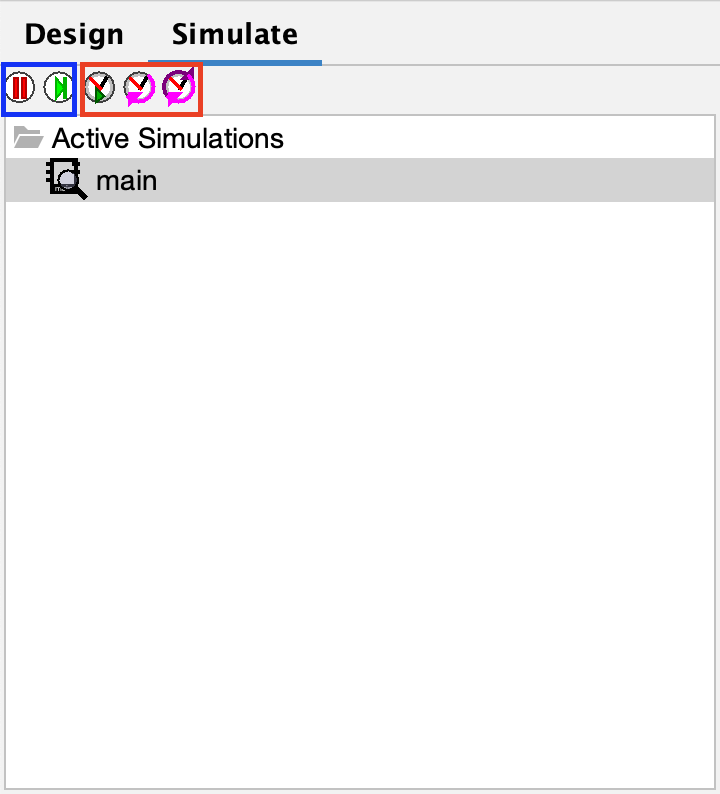

Simulate Menu
The simulate menu is a useful feature allowing you to easily test and debug your circuit.

The simulate menu is a pretty simple menu, composed of a row of simulation buttons and an "Active Simulations" folder containing your main circuit and subcircuits. Most users can ignore the "Active Simulations" folder.
-
Play/pause and step buttons (blue box)
-
Clock tick buttons (red box)
The play/pause button allows you to pause and resume circuit simulation. Once simulation is paused, you can use the step button to see each step of the circuit's state changing. This is extremely helpful to find out exactly where and when your circuit does not behave as intended.
-
Auto tick: click to automatically tick the clock; click again to stop automatic ticking.
-
Half tick: click to tick the clock by half a cycle.
-
Full tick: click to tick the clock by one full cycle.